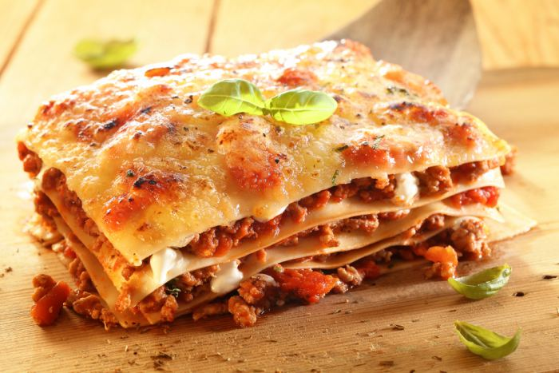

Inicio
Pasticho

Descripción
Pasticho con carne al mejor estilo venezolano
Ingredientes
- 1/2 kilo de pasta para pasticho.
- 2 cucharadas de aceite de maíz.
- 1 cebolla, finamente picada.
- 2 dientes de ajo, picados.
- 1 kilo de carne molida (pulpa negra).
- 4 tazas de tomate maduro, pelado, sin semillas y picado.
- 1 lata grande de puré de tomate.
- 1/2 cucharadita de albahaca, orégano y laurel.
- 250 gr de jamón de pierna cortado en tiras finas.
- 1/2 taza de vino tinto seco (opcional).
- 250 gr de jamón de pierna cortado en tiras finas.
- 1 taza de nata venezolana Paisa.
- 1/2 Kg de queso mozzarella Paisa, en tajaditas delgadas.
- 200 gr de queso parmesano.
- Sal y pimienta
Pasos:
- En una sartén coloque el aceite y, a fuego medio, ponga a dorar ligeramente la cebolla y el ajo.
- Agregue la carne y cocine hasta que toda la carne esté de color café.
- Escurra la grasa y adiciónela sal y la pimienta.
- Añada los tomates, el puré de tomate, las hierbas, el vino y el caldo (si no usa vino agregue 2 tazas de caldo, Mezcle bien y, a fuego lento, sin tapar, cocine revolviendo ocasionalmente durante aproximadamente 1 y 1/2 horas). Si la salsa se espesa mucho vaya agregando agua caliente.
- Verifique la sazón y retire la hoja de laurel.
- Cocine las pastas de acuerdo con las instrucciones, Deben quedar un poco duras.
- En una envase refractario o molde, engrasado, extienda en el fondo una capa de pasta, encima coloque la salsa; inmediatamente ponga otra capa de pasta, una de nata, una de queso mozzarella, una de jamón de pierna y una de parmesano.
- Repita el procedimiento, debe ser por lo menos tres capas, así que calcule de acuerdo para que sus ingredientes le alcancen. Debe terminar con queso parmesano.
- Cubra con papel de aluminio y lleve al horno precalentado a 30 por 23 a 30 minutos. Descubra y cocine hasta quede burbujeante y ligeramente por encima.